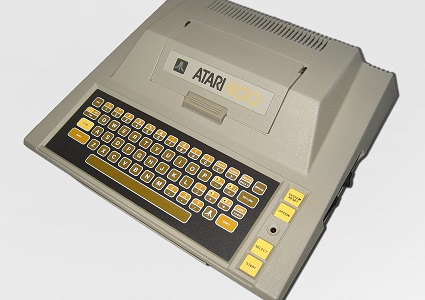
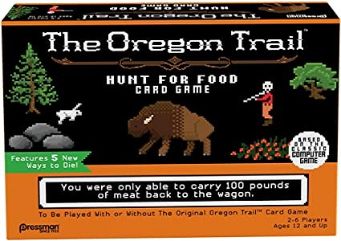
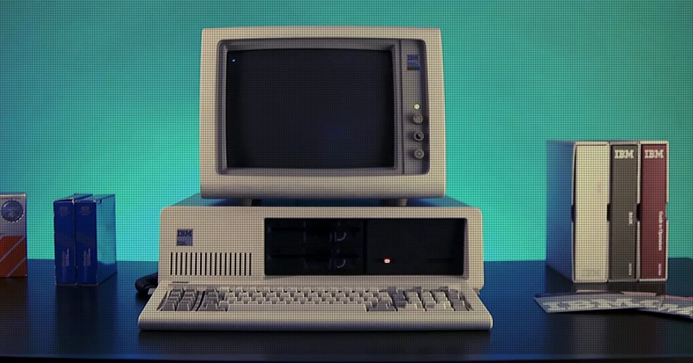
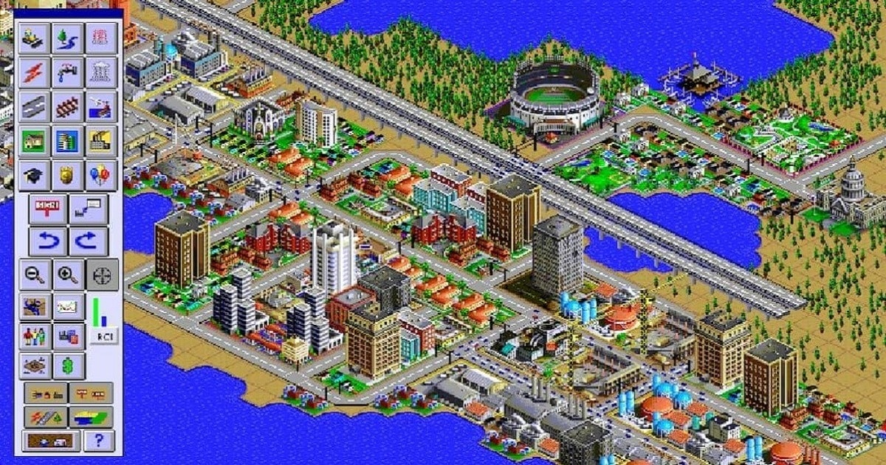
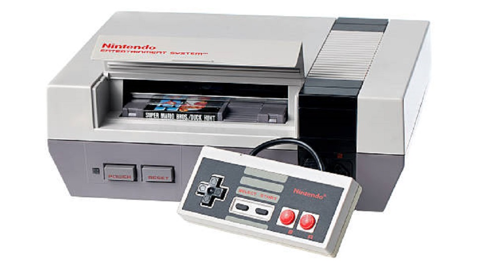
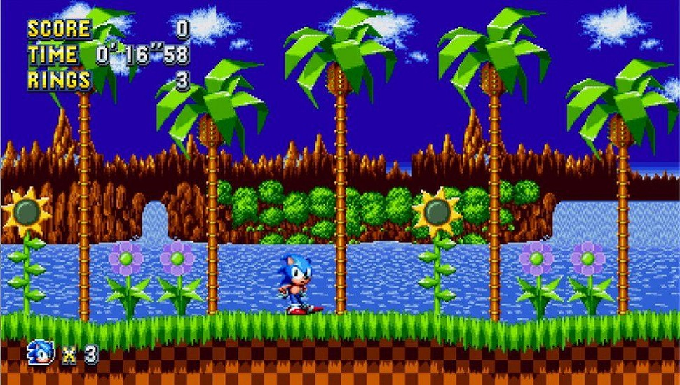
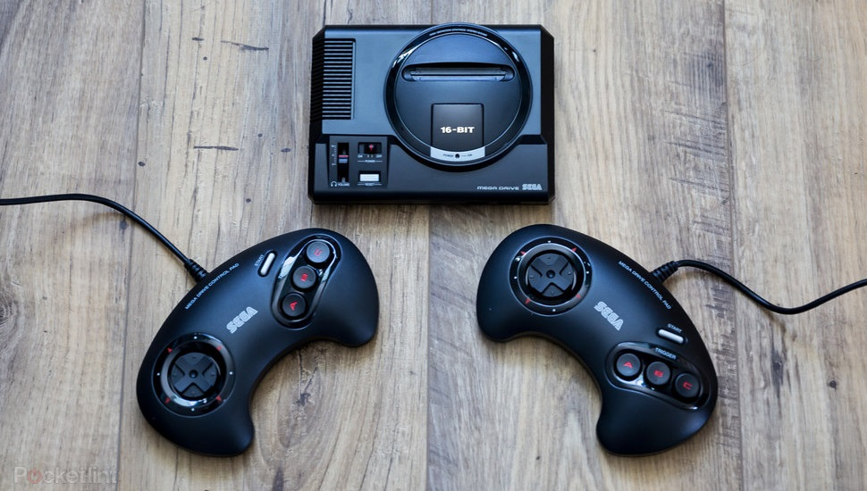

© Andrei Bertescu


 printați
printați
+40 725 099 253 |
andrei.bertescu2@gmail.com |
Anii 1980-1990
Industria jocurilor video a cunoscut primele încetiniri majore de creștere la începutul anilor 1980; Momeala pieței a adus multe companii cu puțină experiență să încerce să valorifice jocurile video și au contribuit la prăbușirea industriei din 1983, decimând piața nord-americană. În urma prăbușirii, companiile japoneze au devenit lideri în industrie, iar pe măsură ce industria a început să se redreseze, au apărut primele edituri majore, maturând industria pentru a preveni un accident similar în viitor.
Prăbușirea jocurilor video din 1983
Succesul Activision ca dezvoltator independent pentru Atari VCS și alte console de acasă a inspirat alte firme să apară la începutul anilor 1980; până în 1983, cel puțin 100 de companii diferite pretindeau că dezvoltă software pentru Atari VCS. S-a estimat că acest lucru a dus la un exces de vânzări, doar 10% dintre jocuri producând 75% din vânzări pentru 1983, pe baza estimărilor din 1982. În plus, au existat întrebări cu privire la calitatea acestor jocuri. În timp ce unele dintre aceste firme au angajat experți în design și programare de jocuri pentru a construi jocuri de calitate, majoritatea au fost angajate de programatori începători susținuți de capitaliști de risc fără experiență în zonă. Ca urmare, piața Atari VCS a devenit diluată cu cantități mari de jocuri de proastă calitate. Aceste jocuri nu s-au vândut bine, iar comercianții și-au redus prețurile pentru a încerca să scape de inventarul lor. Acest lucru a afectat și mai mult vânzările de jocuri de înaltă calitate, deoarece consumatorii ar fi atrași să cumpere jocuri cu preț convenabil în defavoarea jocurilor de calitate marcate la un preț obișnuit
La sfârșitul anului 1983, mai mulți factori, inclusiv o piață inundată de jocuri de proastă calitate și pierderea controlului publicării, lipsa încrederii consumatorilor în liderul pieței Atari din cauza performanței slabe a mai multor jocuri de mare profil și computerele de acasă, care au apărut ca o platformă nouă și mai avansată pentru jocuri, a făcut ca industria de jocuri video din America de Nord să experimenteze o scădere severă. Accidentul din 1983 a falimentat mai multe companii nord-americane care produceau console și jocuri de la sfârșitul lui 1983 până la începutul lui 1984. Piața de 3 miliarde de dolari din SUA în 1983 a scăzut la 100 de milioane de dolari până în 1985, în timp ce piața globală a jocurilor video estimată la 42 de miliarde de dolari în 1982 a scăzut la 14 miliarde de dolari până în 1985. Warner Communications a vândut Atari lui Jack Tramiel de la Commodore International în 1984, în timp ce Magnavox și Coleco au părăsit industria. Efectele accidentului au slăbit, de asemenea, industria jocurilor arcade și piața jocurilor pe computer personal timp de câțiva ani după accident.
Accidentul a avut efecte minore asupra companiilor japoneze cu parteneri americani afectați de prăbușire, dar, pentru că majoritatea companiilor japoneze implicate în jocuri video în acest moment au o istorie lungă, au reușit să înfrunte efectele pe termen scurt. Accidentul a pregătit scena pentru ca Japonia să devină lider în industria jocurilor video în următorii câțiva ani, în special odată cu introducerea de către Nintendo a Nintendo Entertainment System în SUA și în alte regiuni occidentale în 1985, menținând cu strictețe controlul publicării, pentru a evita aceiași factori care au dus la prăbușirea din 1983.
Ascensiunea jocurilor pe calculator
În urma succesului Apple II și Commodore PET la sfârșitul anilor 1970, la începutul anilor 1980 au apărut o serie de computere personale mai ieftine. Acest lot secund a inclus Commodore VIC-20 și 64; Sinclair ZX80, ZX81 și ZX Spectrum; NEC PC-8000, PC-6001, PC-88 și PC-98; Sharp X1 și X68000; și familia Atari pe 8 biți, seria BBC Micro, Acorn Electron, Amstrad CPC și MSX. Multe dintre aceste sisteme și-au găsit favoarea pe piețele regionale.
Aceste noi sisteme au contribuit la catalizarea atât a pieței computerelor de casă, cât și a jocurilor, prin creșterea gradului de conștientizare a informaticii și a jocurilor prin campaniile lor de publicitate concurente. Acest lucru a fost cel mai notabil în Regatul Unit, unde BBC a încurajat educația informatică și a susținut dezvoltarea BBC Micro cu Acorn. Între BBC Micro, ZX Spectrum și Commodore 64, un nou val de „coderi de dormitor” au apărut în Regatul Unit și au început să-și vândă propriul software pentru aceste platforme, alături de cele dezvoltate de mici echipe profesioniste.
|  |  |
PC compatibil cu IBM
În timp ce al doilea val de sisteme de computere de casă a înflorit la începutul anilor 1980, acestea au rămas ca sisteme hardware închise unul față de celălalt; în timp ce programele scrise în BASIC sau în alte limbaje simple ar putea fi copiate cu ușurință, programele mai avansate ar necesita portare pentru a îndeplini cerințele hardware ale sistemului țintă. Separat, IBM a lansat primul computer personal IBM (IBM PC) în 1981, livrat cu sistemul de operare MS-DOS. PC-ul IBM a fost proiectat cu o arhitectură deschisă pentru a permite adăugarea de noi componente, dar IBM a intenționat să mențină controlul asupra producției cu BIOS-ul proprietar dezvoltat pentru sistem. Pe măsură ce IBM se străduia să răspundă cererii pentru PC-urile sale, alți producători de computere, cum ar fi Compaq, au lucrat pentru a face ingineria inversă a BIOS-ului și au creat computere compatibile cu IBM până în 1983. Până în 1987, computerele compatibile cu IBM dominau piața computerelor de acasă și de afaceri.
În 2008, Sid Meier a enumerat PC-ul IBM drept una dintre cele mai importante trei inovații din istoria jocurilor video. Avansarea capacităților grafice și de sunet ale PC-ului compatibil cu IBM a condus la mai multe jocuri influente din această perioadă. Numeroase jocuri care au fost deja realizate pentru computerele anterioare de casă au fost ulterior portate pe un sistem compatibil IBM pentru a profita de baza mai mare de consumatori, inclusiv seriile Wizardry și Ultima, cu versiuni viitoare lansate pentru PC-ul IBM. Primele jocuri de aventură grafică de la Sierra On-Line au fost lansate cu seria King's Quest. Primul joc SimCity de la Maxis a fost lansat în 1989.
|  |  |
Console pe 8 biți În timp ce prăbușirea jocurilor video din 1983 a devastat piața din Statele Unite, sectorul jocurilor video din Japonia a rămas nevătămat. În acel an, Nintendo a introdus Famicom (prescurtare de la Family Computer), în timp ce nou-venitul Sega și-a folosit fundalul jocurilor arcade pentru a proiecta SG-1000. Famicom a devenit rapid un succes comercial în Japonia, cu 2,5 milioane de console vândute până la începutul anului 1985. Nintendo a vrut să introducă sistemul pe piața slabă a Statelor Unite, dar a recunoscut că piața încă se luptă din cauza prăbușirii din 1983, iar jocurile video aveau încă un percepția negativă acolo. Lucrând cu divizia sa Nintendo of America, Nintendo a redenumit Famicom ca Nintendo Entertainment System (NES), dându-i mai degrabă aspectul unui casetofon video și a lansat sistemul în Statele Unite în 1985 cu accesorii ca R.O.B. (Robotic Operating Buddy), pentru a face sistemul să pară mai sofisticat decât consolele anterioare de casă. NES a revitalizat piața jocurilor video din SUA, iar până în 1989, piața din SUA a revenit la 5 miliarde de dolari. Peste 35 de milioane de sisteme NES au fost vândute în SUA de-a lungul vieții sale, cu aproape 62 de milioane de unități vândute la nivel global. |
Console pe 16 biți Sega a lansat următoarea sa consolă, Mega Drive în Japonia în 1988, și a redenumit Sega Genesis pentru lansarea sa în America de Nord în 1989. Sega a vrut să conteste dominația NES în Statele Unite cu Genesis, iar campania inițială s-a concentrat pe Puterea de 16 biți a Genesis asupra NES, precum și o nouă linie de jocuri sportive dezvoltate pentru consolă. Nu a reușit să facă o scădere semnificativă în dominația NES. Sega l-a angajat pe Tom Kalinske pe postul de președinte al Sega pentru America pentru a conduce o nouă campanie. Printre modificările aduse de Kalinske a fost o reducere semnificativă a prețului în consolă și combinarea celui mai nou joc Sega, Sonic the Hedgehog, cu cea mai nouă mascota Sega cu același nume, cu consola. Schimbările lui Kalinske i-au oferit lui Genesis un avantaj față de NES până în 1991 și au condus la începutul unui război pe console între Sega și Nintendo. Consola Nintendo pe 16 biți, Super Nintendo Entertainment System (SNES) a avut dificultăți la lansarea sa inițială în Statele Unite, datorită puterii Genesis. Acest război al consolelor dintre Sega și Nintendo a durat până în 1994, când Sony Computer Entertainment a perturbat ambele companii odată cu lansarea PlayStation. |
|  |  |  |